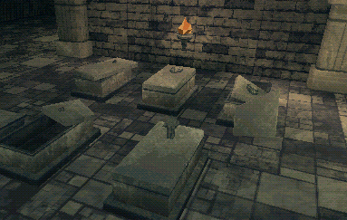
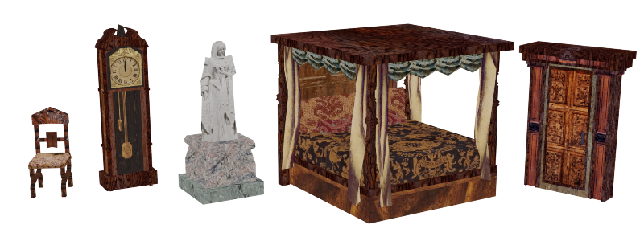
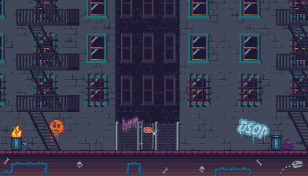
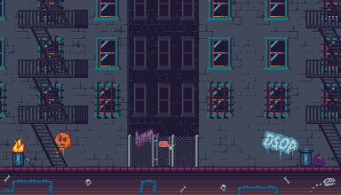
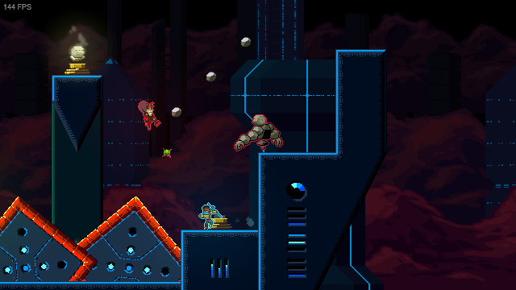
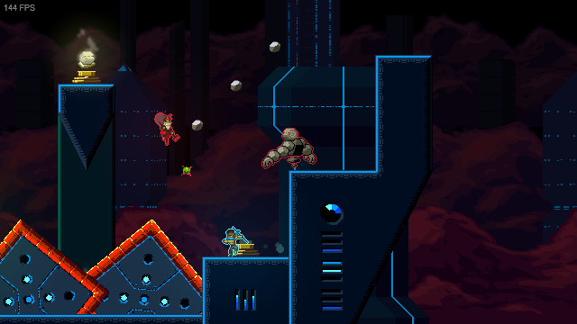
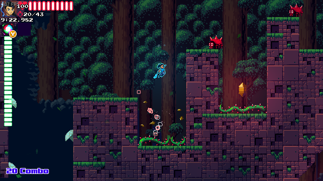
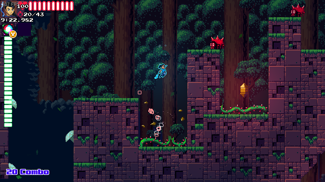

Game Art Portfolio
Hello! Below is some of my 3D and pixel art game work. I'm especially fond of the 3D pixel style.
I primarily use Blender, Unity, GraphicsGale, and Krita.
I did all modelling, texturing, rigging, and animation for the pieces on this page. Many are from games where I made custom shaders and VFX. I've written about some of my experience there in articles for Dropchute and Ten Minutes to Y2K.
In-development FPS roguelite





10 Minutes to Y2K

Scarred Planet Outlaws
{kind=link}


Dropchute
Miscellaneous 3D art


Pixel Art
I haven't made pixel art for traditional 2D games in a little while. Here's a pixel dailies piece and some fighting game backgrounds for a jam.

 

Mystic Melee
Below are screens from the pixel platformer I made, Mystic Melee. Unfortunately the game isn't complete but for an overambitous first gamedev project I'm happy with how it plays.
See it in motion here.


 

 

Thanks for looking! If you'd like chat, you can reach me here:
Discord: wexley#9811
Email: ben.h.hopkins@gmail.com
Twitter: benhhopkins